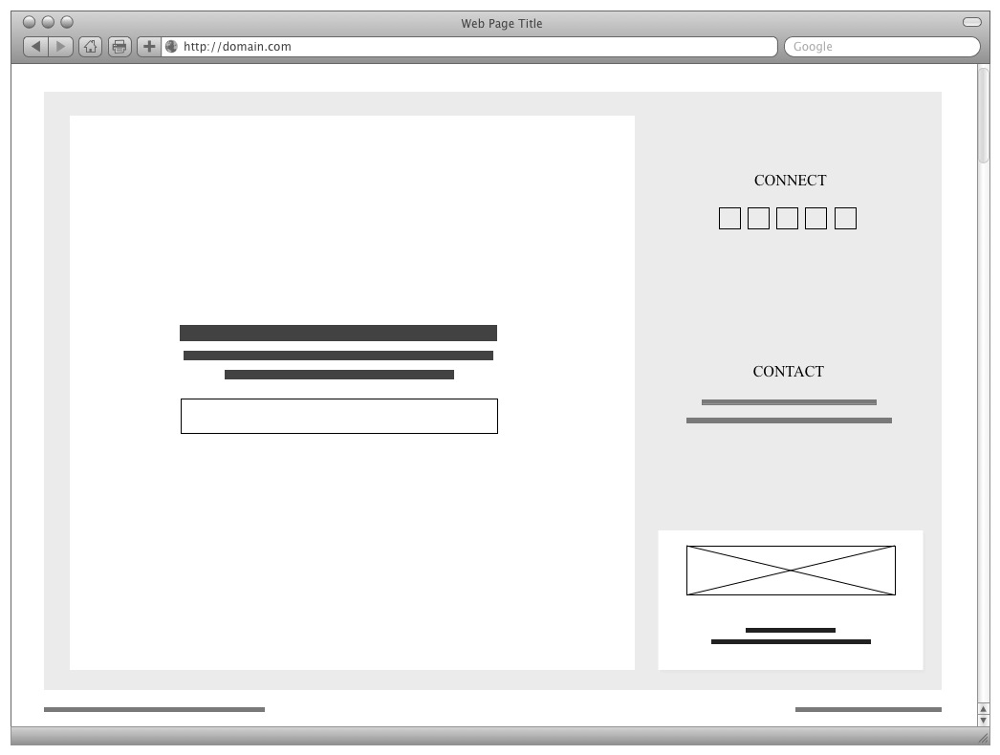
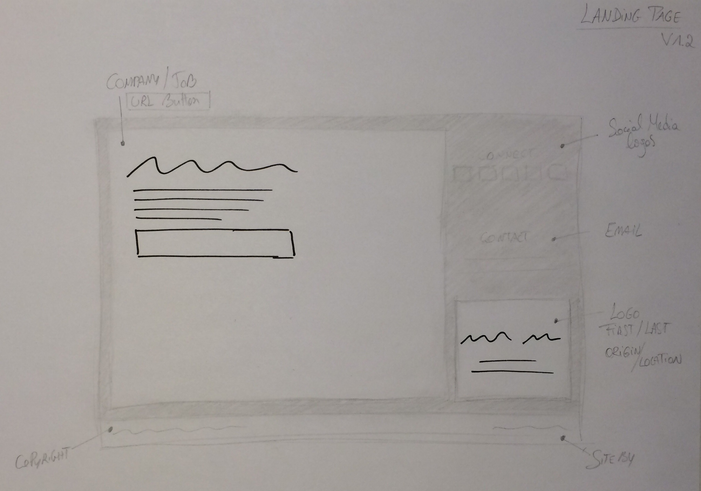
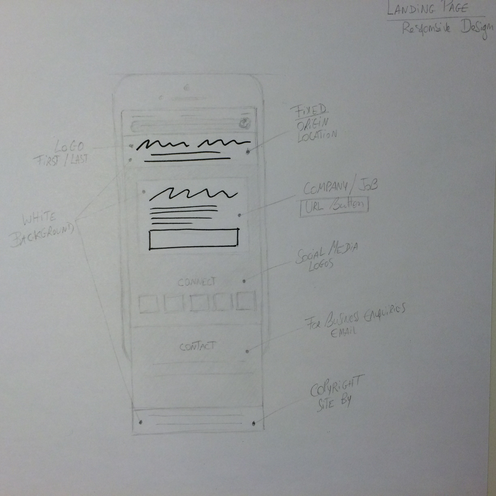
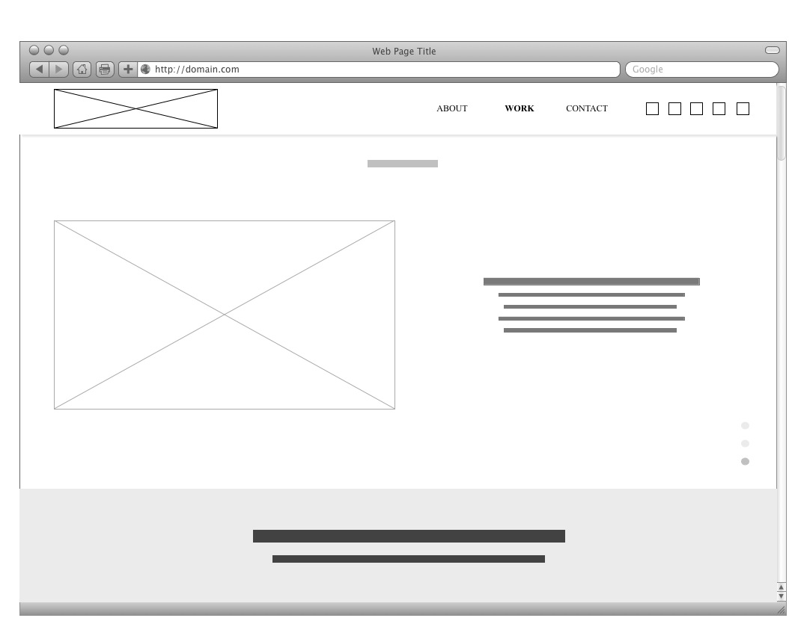
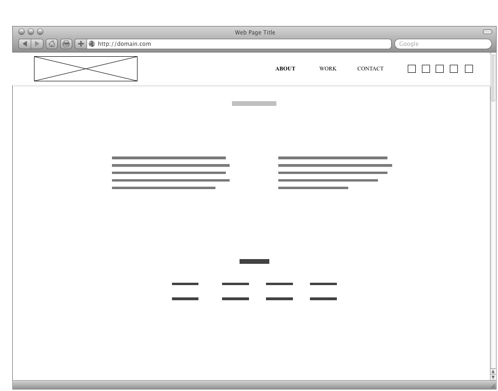
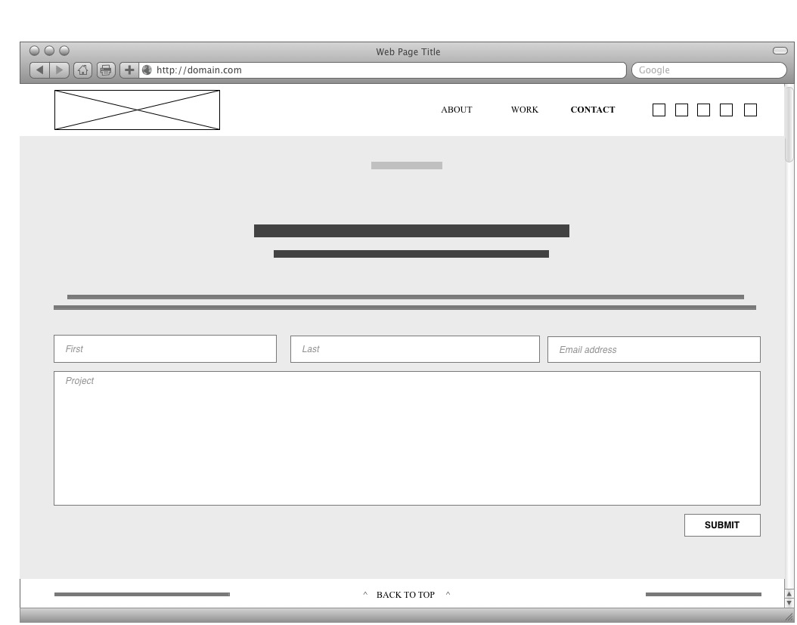
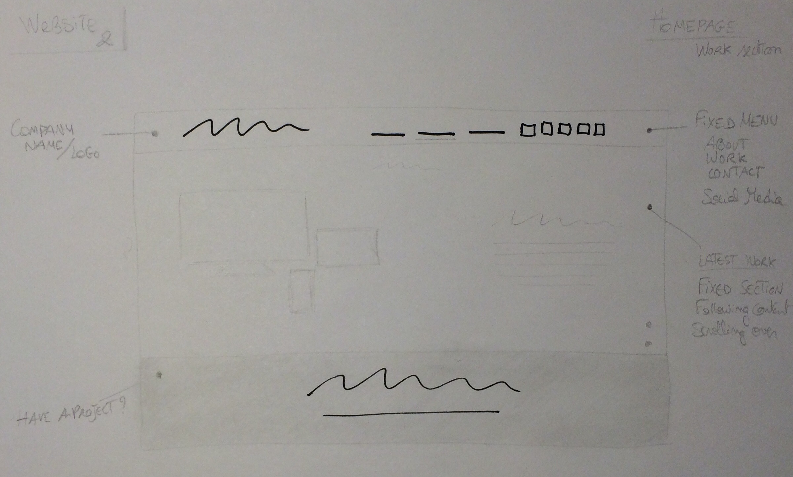
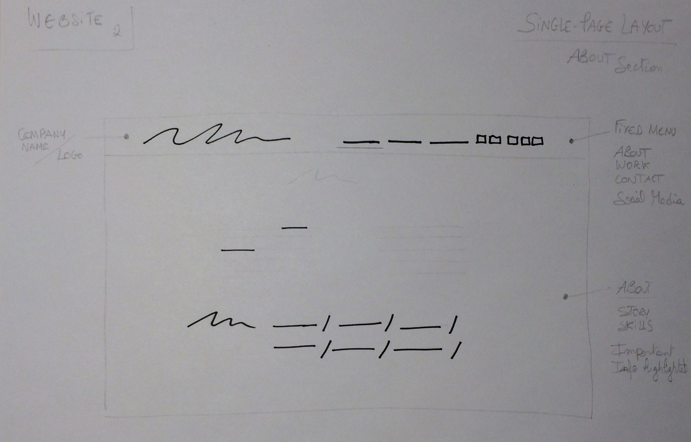
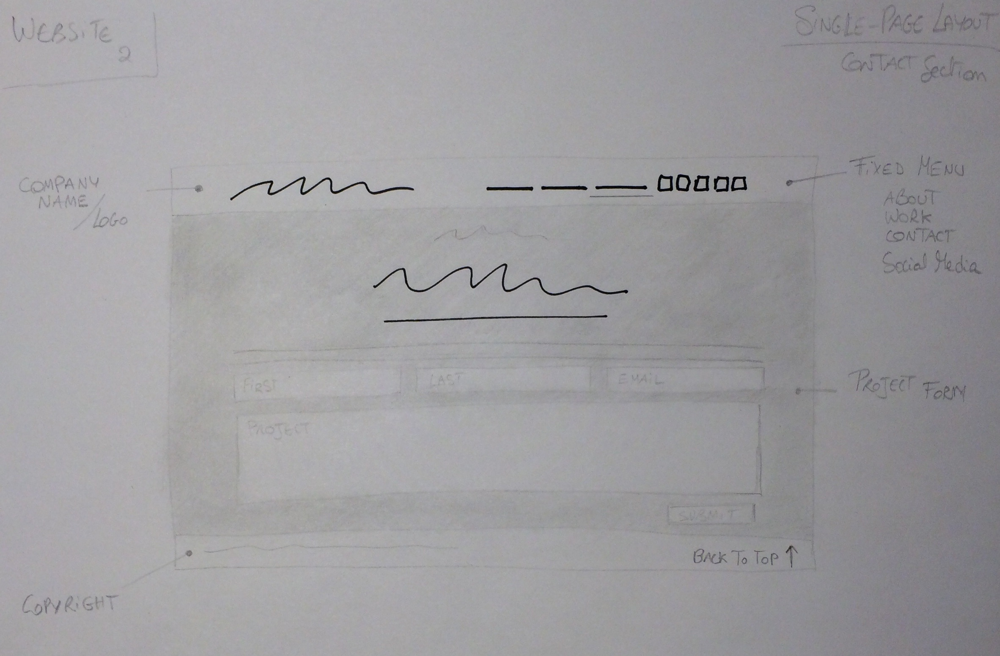
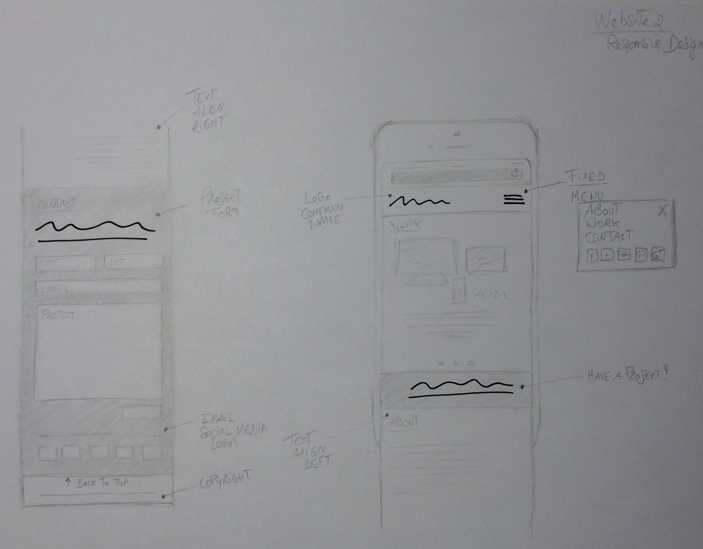

The first website is oliolusso.com, a beauty brand.
The second website is shinebythree.com, a fashion/photography blog.
The purpose of OlioLusso.com appears to be centered around recognizing and discovering the brand. And, less about converting users into subscribers or even shoppers. Indeed, the site opens with a balanced and full screen pattern made of the products' collection, grouped together (focal point, balance). It's about making the users recognize the products in an editorial context. The pattern consists of 7 products photographed in different positions and sizes to emphasize the logo (Rodin), color (yellow-gold), shape, and packaging (white) of the products.
The pattern then becomes the white space, or negative space, of the homepage with a white filter covering the image to decrease the importance of that element and bring the attention of the users to the second element in the site's hierarchy (flow), the menu. The latter is unbalanced with 6 elements positioned vertically on the left top corner of the page (text), leaving a lot of white space for the content of each page in the center, and 1 element (logo) on the top right corner of the page. Forming a 3 column-grid design without showing the lines. The users are drawn to explore the left menu and further discover the brand.
I found the "Linda Rodin" page particularly balanced. They played with the size and position of texts (emphasizing quotes) and images to break down and illustrate the long story. Making the page engaging. There are few things that I would have changed (although, it's perhaps not in the brand's agenda). For the "Products" page: I like the 2 columns, they create great balance and fill the space, but the emphasis seems to be on the large typography of the product's type name instead of influencing people to purchase the product. Perhaps playing with color "Add To Bag" or the space above the content... For the "News" page: I feel that the videos could have been displayed in 2 columns instead of 1, or centered. It doesn't feel balanced to me, it's quite heavy on the right side with a lof of negative space on the left. Also, some of the pages are quite long. The footer, with the newsletter subscription, contact information, and social media logos, is getting lost if the users don't scroll down to the bottom of the page.
The size of the post's heading automatically draws the users to the post, and is used effectively to separate and introduce each post. However, I do think that because the size of the blog's name is quite big (and has same typography), it competes a bit with the title of the post.
As the users scroll down the page, they are invited to "continue reading" about each post. I like how they vary the layout for each post's sneak peak, either one large image (even full screen width), or one image on one side and the title/description on the other side with a lot of negative space... It keeps the site engaging and invites the users to explore more, thefore increasing their time on the site. And, it is a great way to display her photography. There is also enough space between each post to let the site breathe. Because there is a desciption accompanying the post's title, the balance is kept when the layout allows an image on one side. In addition, when the users click to read more about the post, again the layout allows for variation. From fixed images scrolled over by text, to text and images switching places (left-right). The header (menu) and footer are also well balanced with items on each side of the site's name. There is enough space between the menu's elements to highlight the main sections, with options for subcategories (I like the layout when the users hover on "About").
One of the goals behind the site is to convert users into Instagram followers, through the plugin (at the bottom of the page) showcasing the latest images posted by the blogger, and the username. The images are big enough to attract attention and the plugin takes the full width of the page. The size of "Instagram" compared to the logo of other social medias also emphasizes the platform that they want the users to focus on.
Both websites follow the flat design trend and have a multi-page layout. Not that I'm against single-page layout. What's interesting with single-page layout is that if the content is engaging and set well, it can keep users to the site longer by introducing them to content that they wouldn't have checked themselves otherwise. The one-page layout might also be interesting for mobiles (responsive design).
Both websites also have a clean, minimalist, and modern feel to them. They don't feel cluttered and use similar typography and color scheme. They use space and arrange elements in a similar way. There is a great distinction of size between headings and paragraph.
OlioLusso.com, however, is more about securing a digital presence for the brand, mainly the domain name, and telling the story that the founder wanted, with a place to provide contact information for the clients and press. While ShineByThree.com is a place for the blogger to stay in touch with her followers, showcasing her work, and encourage engagement and dialogue through the Disqus plugin and other social media platforms.
Wireframe 1 represents the digital rendition of website n1, a landing page with all information above the fold. Through the sketches and digital wireframes (for both websites), I attempted to highlight the focal point by using darker ink, increasing the size of the element, and leaving a lot of negative space surrounding it. The intended hierarchy: Content (in the white square on the left) | Logo + info (in white rectangle on the right) | Social Media (Connect, in top grey area) | Contact (in grey area) | Footer. Although, I follow the flat design trend, I enclosed the URL of a website in a bordered rectangle with no shadow (in white square on the left) to encourage the users to click and visit the site related to the content (call to action).
Sketch 1 represents website n1.
Sketch 2 represents the responsive design of website n1. My intention is to avoid that the users have to zoom to read the content and/or navigate throughout the site, so providing the site section by section, with the logo (+ info, on white background) fixed on top of the screen.
Wireframe 2 represents the digital rendition of website n2 ("homepage/work" section), a single-page layout with 3 main sections (homepage/work, about, contact). The latest work will be showcased here on the homepage.
Wireframe 3 represents the digital rendition of website n2, section "about." As users are busy, the focus is more on the skills (represented in darker ink, using words versus long sentences). The story above is in lighter ink with important words in darker ink to highlight them and attract the attention to the info that might be useful.
Wireframe 4 represents the digital rendition of website n2, section "contact." I wanted the project form to fill the width of the screen to further encourage the users to contact the company with their ideas. I also emphasized it by making it stand out from the colored background.
Sketch 3 represents the "homepage/work" of website n2.
Sketch 4 represents the "about" section of website n2.
Sketch 5 represents the "contact" section of website n2.
Sketch 6 represents the responsive design of website n2. The logo/menu is also fixed at the top of the screen.
